İskender Kebap
Kızarmış pide, tereyağı-domates sosu ve yoğurtla servis edilen Bursa'nın en tanınmış lezzeti.
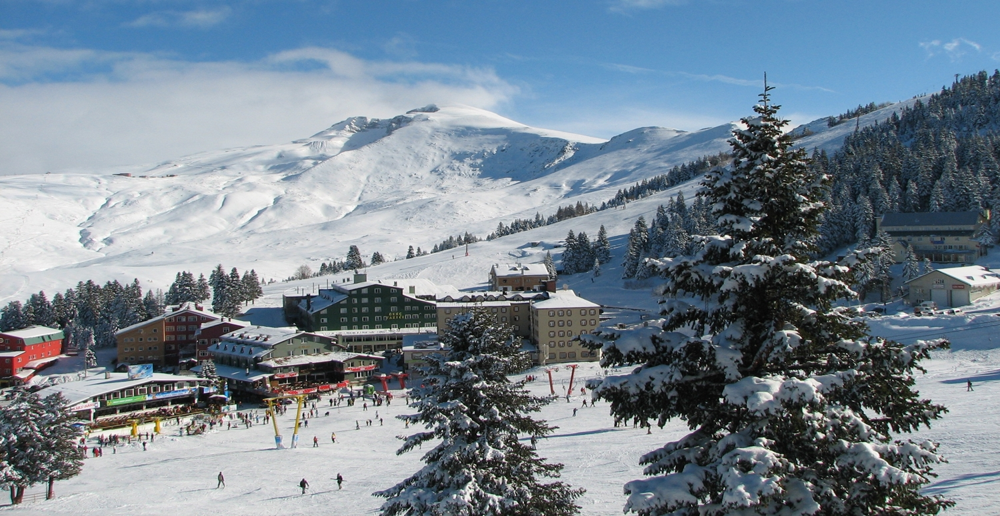
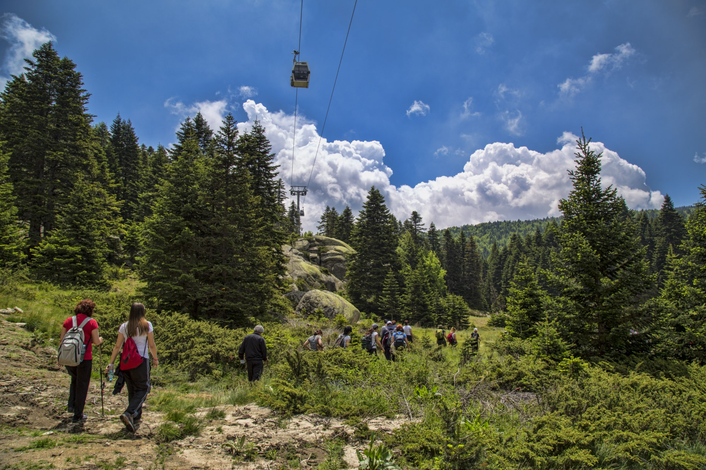
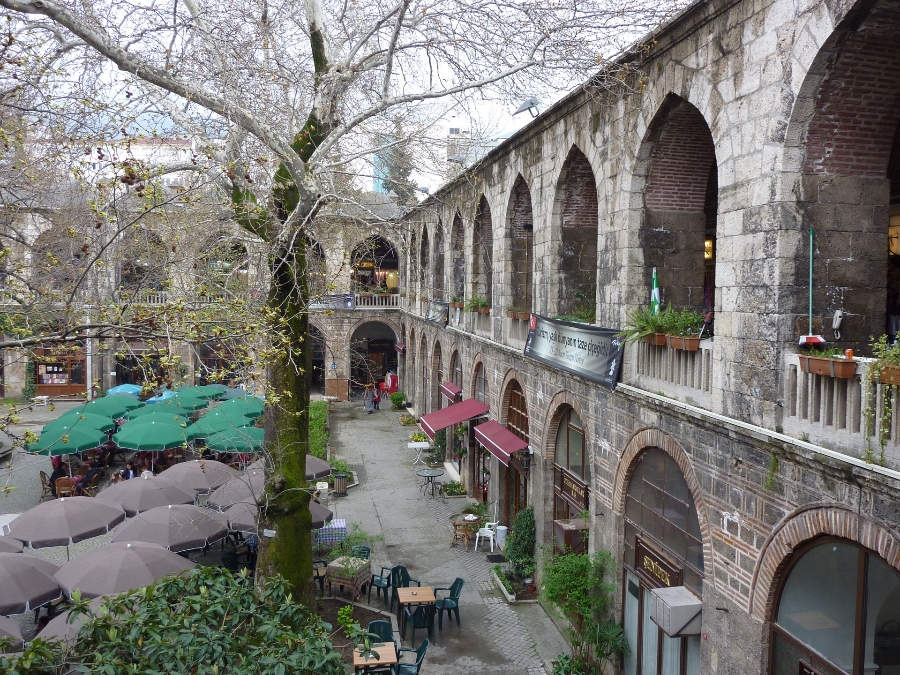
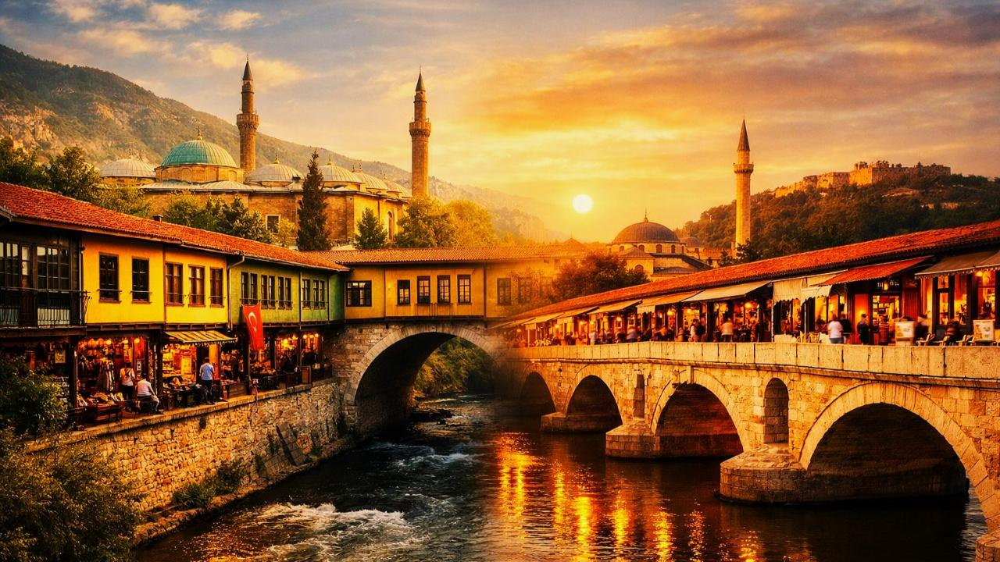
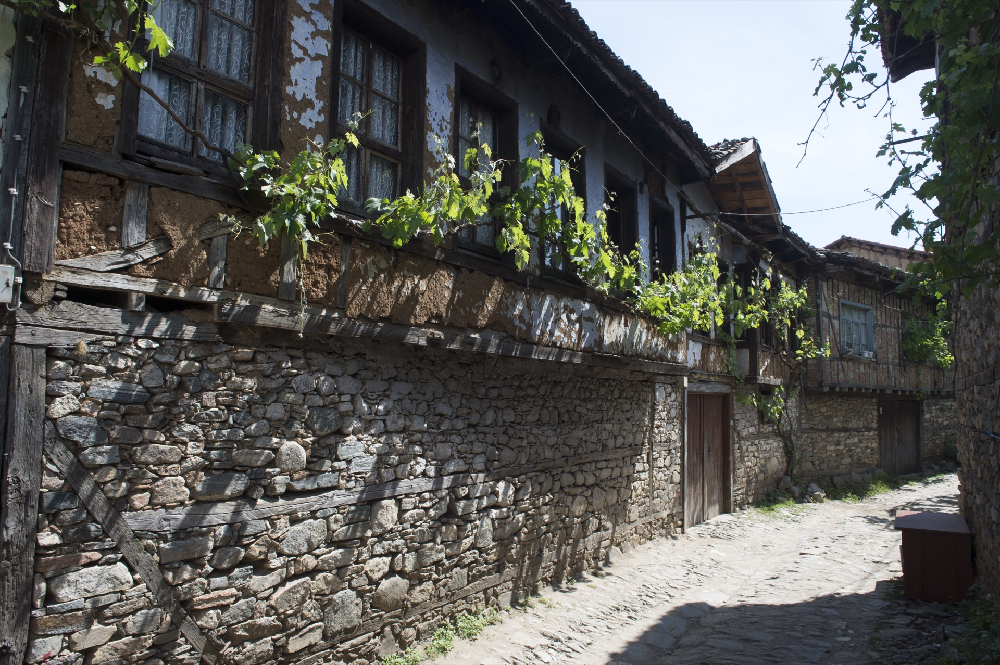
Dağın eteğinde kurulmuş, imparatorluğun, ipeğin, taşın, ormanların ve yüzyıllara yayılan bir tarihin biçimlendirdiği bir şehir.
Bursa, Osmanlı Devleti'nin ilk başkenti oldu ve yüzyıllar boyunca camiler, hanlar, çarşılar, türbeler, bahçeler ve mahalleler etrafında şekillenerek büyüdü.
Koza Han'dan Ulu Cami'ye, kapalı çarşılardan geleneksel sokaklara ve çay bahçelerine kadar, Bursa'nın tarihi merkezi hâlâ gündelik hayatın bir parçası.
Kalan sürene göre optimize edilmiş, adım adım bir gezi planı — durak durak, harita eşliğinde.
İskender'den kestane şekerine, Bursa'yı damakta hatırlatan tatlar.
Kızarmış pide, tereyağı-domates sosu ve yoğurtla servis edilen Bursa'nın en tanınmış lezzeti.
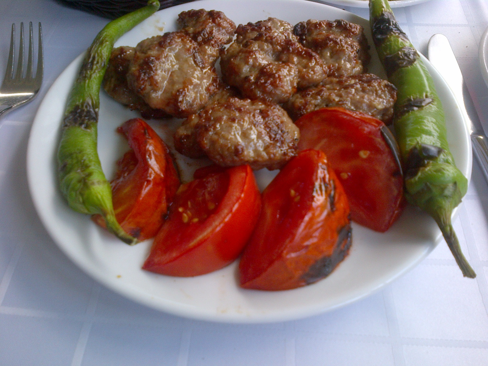
Soğan ve baharatla harmanlanmış, yağsız ve gevrek dokusuyla ünlü İnegöl usulü köfte.
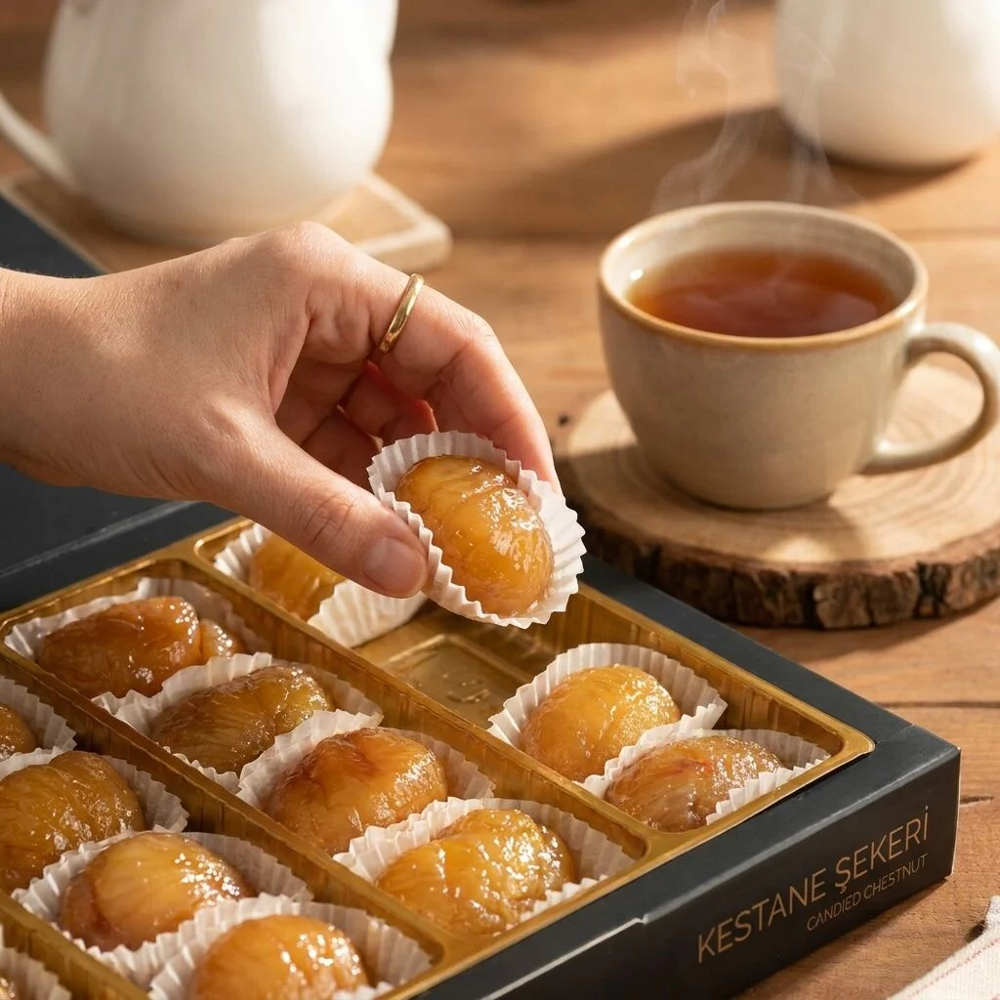
Bursa kestanesinden yapılan, şerbetle kaplanmış geleneksel şekerleme.
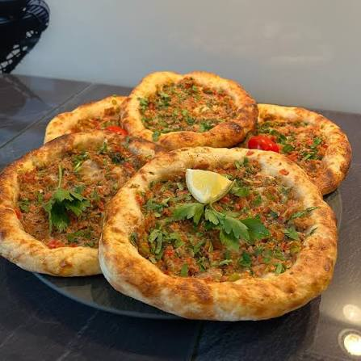
İç harcı etli ya da peynirli, mayalı hamurdan yapılan Bursa'ya özgü mini pide.
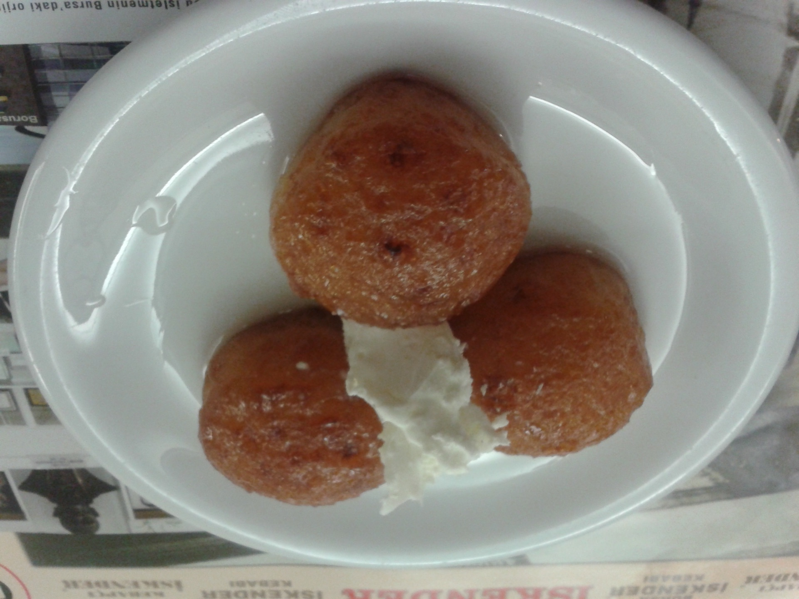
Hafif şerbetli, küçük boyutlu bir hamur tatlısı; Kemalpaşa ilçesinin adını taşır.
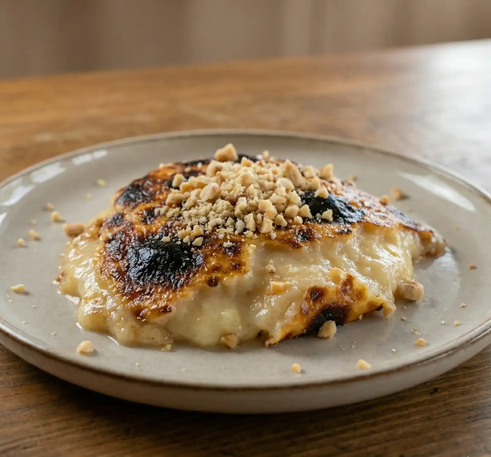
Fırında kavrulmuş un ve sütle yapılan, üzeri tarçınlı, yumuşak dokulu geleneksel bir tatlı.
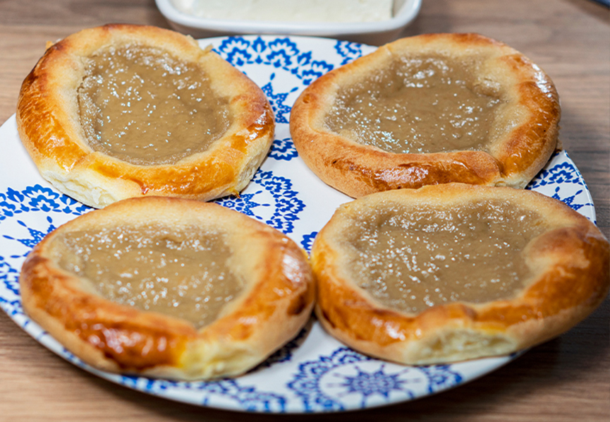
İnce açılmış hamurun üzerine bol tahin sürülüp fırınlanan, sevilen bir Bursa kahvaltılığı.
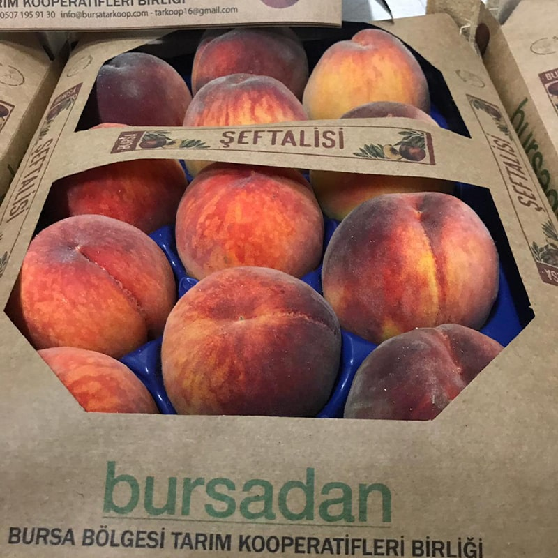
Bursa ovasının sulak topraklarında yetişen, sulu ve aromatik yönüyle ünlü şeftali çeşidi.
Köprüden dağa, handan köye — şehri oluşturan yedi görüntü.
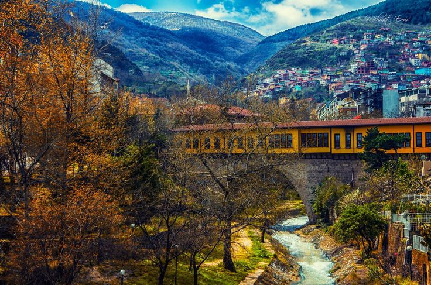
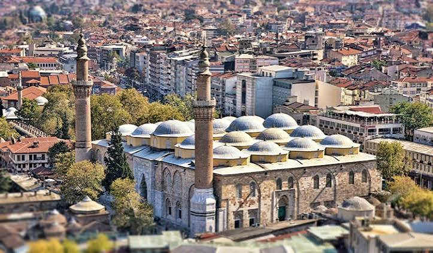
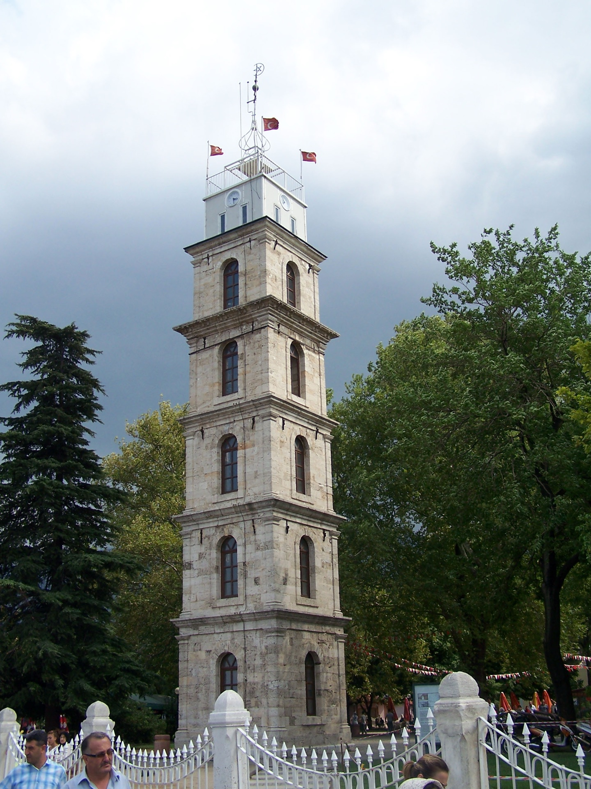